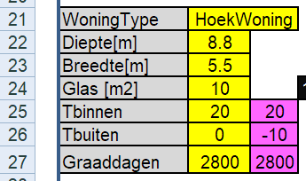
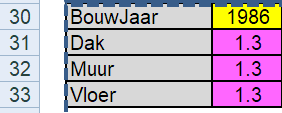
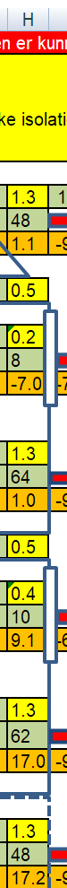
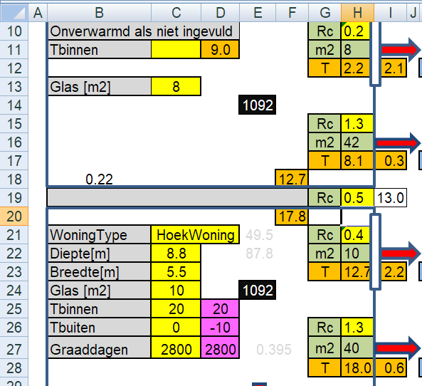
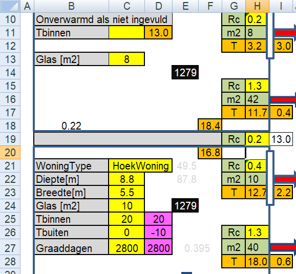
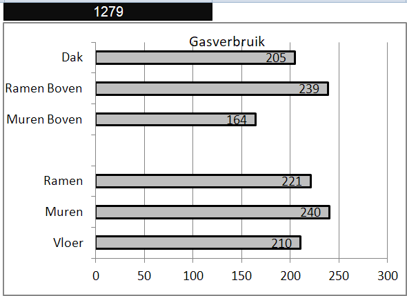
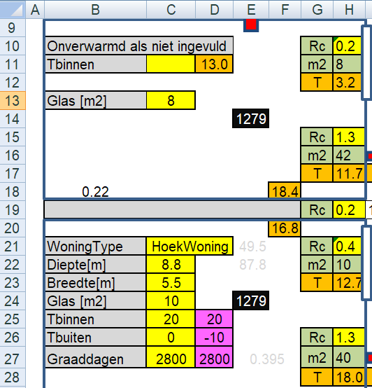
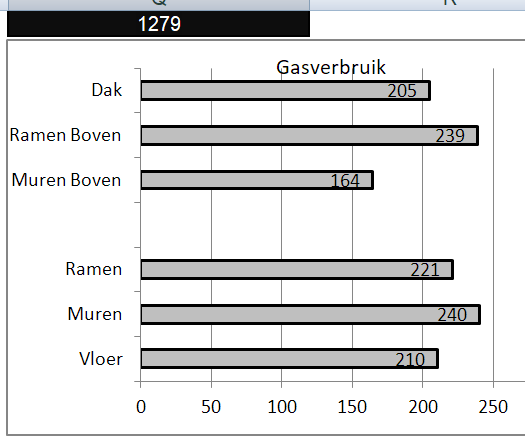
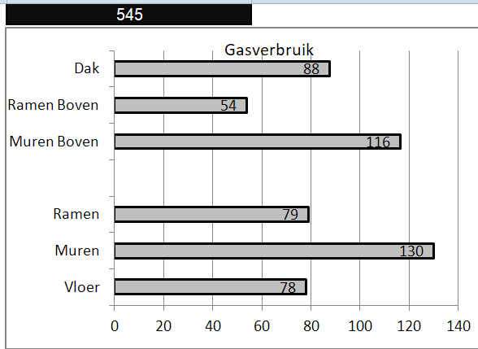
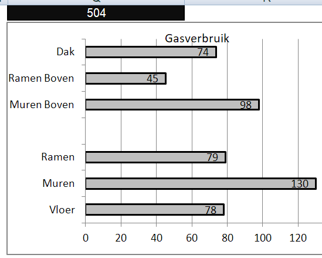

IWL_Voorbeeld_4
13 June, 2022
20:49
Omschrijving
Het betreft een hoekwoning gebouwd in 1986, waarbij nog geen extra isolatiemaatregelen zijn genomen.
De woning bevat beneden (oud) dubbelglas en boven enkel glas.
We veronderstellen dat er niet (direct) wordt gestookt op de eerste verdieping.
Het is dezelfde woning als in de voorbeelden-1 en 2, maar nu wordt er wel een actieve luchtstromen tussen de verdiepingen verondersteld. Eigenlijk is het Voorbeeld-1 met actieve luchtstroom tussen de verdiepingen.
We willen bekijken wat de verschillende isolatiemaatregelen voor effect hebben op het energieverbruik en ook op het comfort.
Conclusies
- Hoewel in een slecht geïsoleerde woning met actieve warmtestromen tussen de verdiepingen fors hoger is dan in een identiek huis zonder warmtestromingen, is het verschil in gasverbruik nauwelijks meer aanwezig als beide woningen goed worden geïsoleerd aan de buitenschil. Dus moeilijke verbouwingen op trapgaten te dichten zijn niet nodig.
- Ook het goed isoleren van ongebruikte / onverwarmde ruimten op de bovenverdieping blijft noodzakelijk, want het plafond is thermisch zo lek als een mandje
- Het blijft zinvol onverwarmde / ongebruikte ruimte zoveel mogelijk dicht te houden, om gasverbruik door ongewenste warmtestromen te voorkomen.
Gegevens van de woning
 | Hier vullen we de eigenschappen van de begane grond van de woning in en Omdat we geïnteresseerd zijn in comfort, vullen we Een prettige waarden voor Tbinnen en Een veel voorkomende (slechte) waarde voor Tbuiten in (deze temperaturen hebben geen invloed op het berekende gasverbruik, wel op het berekende vermogen, dat dus niet juist zal zijn !!!) |

| Hier moeten we het oppervlakte van het glas op de bovenverdieping invullen en Omdat we de bovenverdieping niet direct verwarmen (alleen indirect door de begane grond), laten we het temperatuur veld C11 leeg |
 | Nu vullen we in veld C3 het jaartal in, waarna in de velden daaronder de Rc waarden worden getoond die in dat bouwjaar minmaal verplicht waren. Dus dat zijn waarden die we kunnen gebruiken als we geen feitelijke waarden hebben. |
 |
Vervolgens moeten we alle Rc-waarden in kolom H invullen.
Ug-waarden:
Enkel glas Ug = 5.8
Dubbel glas Ug = 2.8
HR++ glas Ug = 1.0 HR+++ glas Ug = 0.7 Je kunt deze waarde natuurlijk door het rekenblad zelf laten omrekenen naar Rc-waarden, vul voor bijvoorbeeld dubbelglas in:
= 1 / 2.8
(het "= teken" is belangrijk) |
Actieve Luchtstroom
Een actieve luchtstroom tussen de verdiepingen kan worden gesimuleerd door de Rc-waarde van de tussenvloeren (normaal Rc = 0.5 ) te verlagen. De grote vraag is hoeveel die Rc-waarde dan verlaagd moet worden. Het antwoord is lastig, maar door het meten van de temperaturen op een aantal locaties moet een aardige schatting gemaakt kunnen worden. Omdat het gevoelige metingen zijn, een paar belangrijke adviezen:
- Gebruik één en dezelfde thermometer voor alle temperaturen, bij voorkeur een infrarood thermometer of camera op een blokje piepschuim dat minstens 20 seconden in die ruimte aanwezig is (daarmee meet je echt de luchttemperatuur)
- Meet bij een lage buitentemperatuur (bij voorkeur 0 graden Celsius of lager)
- Zorg voor een stabiele omgeving, dus niet een omgeving die nog aan het opwarmen is (in combinatie met punt 2, s'morgens vroeg, nadat de verwarming s'nachts aan heeft gestaan)
Experimenteel is een hulpberekening (verstopt) aangebracht. Meet en vul in de volgende velden: Zorg dat C11 leeg is Tbuiten = C26 Tbinnen = C25 Tboven = C18 Nu verschijnt in cel B18 de equivalente Rc waarde van de tussenvloer, vul deze Rc-waarde in cel H19 en je zult zien dat cel D11 nu gelijk wordt aan de gemeten temperatuur op de bovenverdieping. |  |
Je hebt nu de actieve luchtstroom tussen begane grond en verdieping gesimuleerd De temperatuur van de bovenverdieping is gestegen tot aan de gemeten waarde En het gasverbuik is met bijna 200 m3 toegenomen (1279 - 1092 = 187 ) |  |
Gasverbruik en Temperaturen
 | Glas HR++ is bijna 6 keer beter dan het enkele glas op de bovenverdieping Glas HR++ is bijna 3 keer beter dan het dubbele glas op de beneden verdieping Zoldervloer kan naar een Rc van 3 gebracht worden, dus 6 keer beter. Muren hebben vermoedelijk een spouw van 6 à 7 cm met daarin 3 cm glaswol. Door deze na-te-isoleren kan een Rc=2.4 worden bereikt, een factor 1.5 ongeveer Vloer kan zondermeer naar een Rc van 3.5 worden gebracht, dat is ruim een factor 2.5 |
 | Voordat we een voorkeur voor de volgorde van de isolatie bepalen is het goed om eens naar de oppervlakte temperaturen te kijken.
Muren en vloeren zitten een paar graden lager dan de ruimtetemperatuur, zowel boven als beneden, dus dat is prima. De ramen beneden zijn echter minder dan 13 graden Celsius en boven zelfs slechts 4 graden Celsius, dus dat voelen we (door de straling) als een koude bron. Vanuit comfort is het dus aanbevelingswaardig om eerst het glas te verbeteren.
|
Alle Isolatie maatregelen
Als alle isolatie maatregelen worden uitgevoerd, kunnen we ruim 730 m3 gas per jaar besparen.
1279 - 545 = 734 m3 gas per jaar
Orgineel | Met verbeteringen |
 |  |
Als we dat vergelijken met voorbeeld-1, zelfde woning, maar geen actieve warmtestroom tussen de verdiepingen
Orgineel zonder flow tussen verdiepingen | Met verbeteringen zonder flow |

|  |
We zien dat we na volledige isolatie met een actieve warmtestroom tussen de verdiepingen nauwelijks meer gas gebruiken dan zonder actieve warmtestroom, als we maar zorgen dat de gehele schil goed geïsoleerd is. Als er een actieve warmtestroom is, zal de temperatuur op de bovenverdieping wel iets hoger zijn.
Inzicht WarmteLek Woningen.